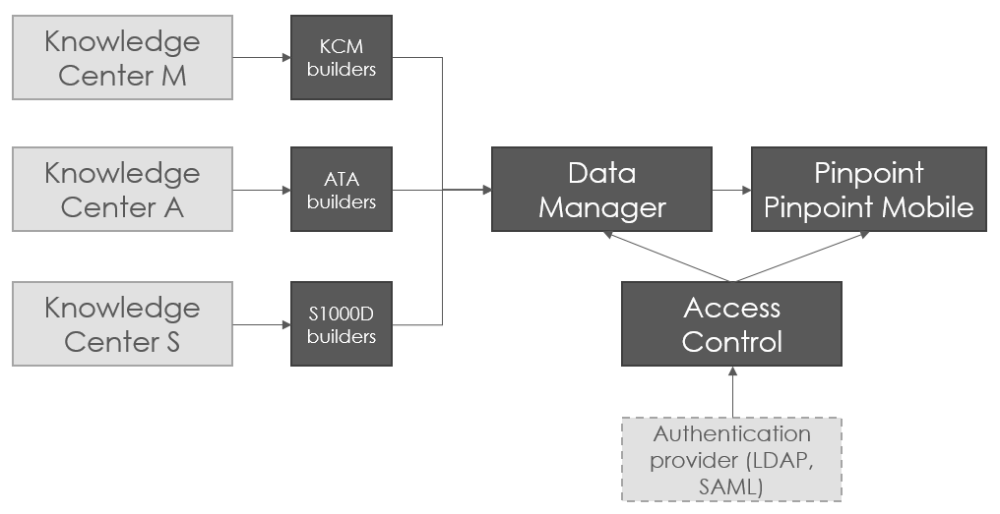

Flatirons Pinpoint
Flatirons Pinpoint consists of several modules that work together to present technical publications in various formats in a web-browser. As illustrated in the diagram below, the Viewer can show publications from multiple sources:

Pinpoint Architecture
With Data Manager and appropriate builders set up, Pinpoint can show publications created in Knowledge Center A, M, and S. Data Manager also supports import of data packages to Knowledge Center S.
Flatirons Pinpoint can be deployed as a server version or as a standalone version. In the server version, the system components are installed in one or several servers. Multiple users can log into the system at the same time, as long as they have the appropriate permissions in the Access Control module.
- A Pinpoint Standalone where the software components are packaged together so that they can be started and run on a single computer, for example in a vehicle or an aircraft. There is usually only one user account on this type. It is still possible for this type of Pinpoint Standalone to synchronize to get updates from a remote Data Manager.
- A Pinpoint Standalone installed on an enterprise system with a local intranet network that is not dependent on outside Internet access. Multiple users can log in using a regular Internet browser from different computers or the same computer.
Pinpoint Standalone Light is a variant created from Pinpoint Standalone after populating the required manuals. It cannot be updated through remote sync. Any updates require generating from Pinpoint Standalone and distributing again. This light version contains only those components that are necessary to log in and view the content, which means that it is smaller in size and faster to start up. It includes a read-only user and does not include the functionality to manage users/groups or privileges.
As mentioned, Flatirons Pinpoint is composed of several modules. You can learn more about these modules by reading the sections below.
Flatirons Pinpoint Viewer
The user guide you are reading right now is for Flatirons Pinpoint Viewer (from this point on referred to as the Viewer). It allow users to read, browse, search, filter, print and do other operations with publications using a web-browser.
Flatirons Pinpoint - Data Manager 
Not applicable for Pinpoint Standalone Light.
Flatirons Pinpoint - Data Manager, (from this point on referred to as the Data Manager), is a web based tool for storing and extracting data into a format called Pinpoint Neutral. The Pinpoint Neutral format is a Flatirons Solutions proprietary format. When a publication has been published from the Data Manager, users can access and read the publication in the Viewer.
Builders
Data Manager comes with different builders such as S1000D Builder, which takes a zipped IETP Neutral package, or the A350 Builder, which fetches data from the Knowledge Center CMS. The different builders can be selected during installation. Additional builders can be developed by Flatirons Solutions, by a customer, or by any third party. They are deployed on servers and connected to the Data Manager.
After a PDF publication has been processed in the Data Manager, the PDF can be displayed in the Viewer content area. Which plug-in (Adobe or PDFJS) is used to open the PDF depends on the browser settings. Pinpoint provides embedded PDFJS for Chrome and Firefox and no PDF Viewer plug-in is required to view documents. Internet Explorer requires Acrobat Reader.
Access Control 
Not applicable for Pinpoint Standalone Light.
Access and permissions in the Viewer and in the Data Manager are managed in Flatirons
Pinpoint - Access Control. Administrators can open Access Control by clicking on the  icon in the
application header and give privileges to users that shall be able view data, publish and
make configuration updates in the application.
icon in the
application header and give privileges to users that shall be able view data, publish and
make configuration updates in the application.
For details on configuring permissions for Pinpoint, refer to "Manage Permissions for Pinpoint Viewer" topic in the Flatirons Access Control Manager User Guide.
Required Third Party Software
- EasyCopy for converting CGM to SVG.
- ImageMagick for converting TIFF to GIF.
EasyCopy and ImageMagick are embedded in the product.
Software for viewing 3D graphics:
- Oracle AutoVue Client/Server Deployment version for viewing BRD/SCH/PCB graphics. Please contact Flatirons for additional information about how to set this up.
- Adobe Flash plugin for viewing SWF format graphics.
Supported Browsers
- Chrome
- Edge Chromium
- Firefox
- Safari
- Opera
- For Chrome, you can resolve this by enabling this setting: "Clear cookies and site data when you close all windows". This option is located under .
- For Edge Chromium, you can resolve this by enabling this setting: "Cookies and other site data". This option is located under .
- For Firefox, you can resolve this by enabling this setting: use "Delete cookies and site data when Firefox is closed". This option is located under .